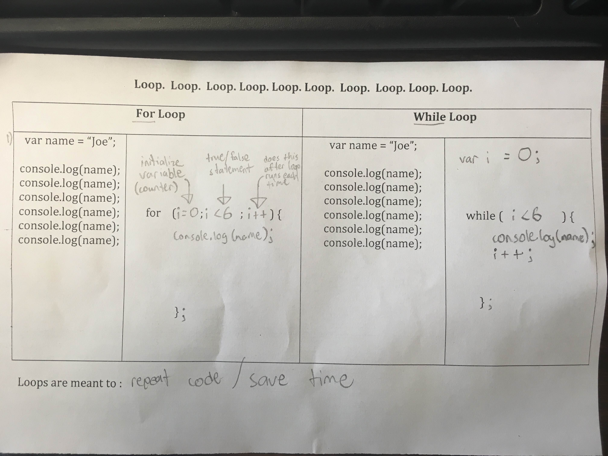
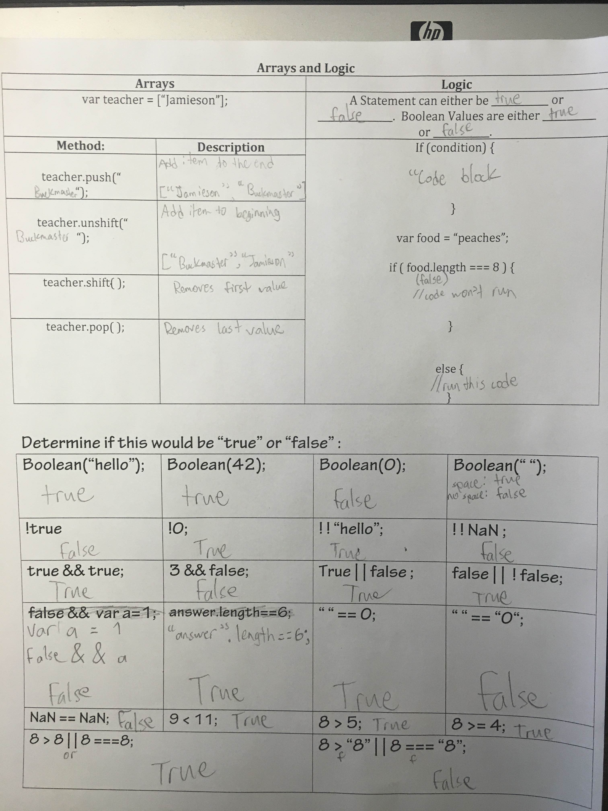

Obj: Students will log into the clas moodle site & begin their web journal.
Agenda:
Welcome/questions
1st glue in
Moodle & forum intro
Summary
Summary: Today I began creating my website. I created the three separate pages and established basic links between them. I started to form the navigation bar, but things did not go entirely as planned. I encountered difficulty trying to properly place my links inside the divs I created.
1/28/16:
Obj: Students will create web pages that include a web journal.
Agenda:
Finish web journal
History of JavaScript reading
Create quiz
Summary
Summary: Today I gave my website more style. It now has orange and grey coloring and specialized divs to organize the content. Mr. Jamieson provided me with a great amount of help in fixing the problem I encountered previous class with the positions of the links in the navigation bar of my website. After all that, I began the reading on the history of JavaScript.
2/1/16
Obj: Students will become familiar with JavaScript through practicing alerts, prompts, variables, and using the console.
Agenda:
Finish history questions
Watch intro JS screen cast
Explore rainbow challenge
Summary
Summary: Today I started and completed my internet history questions. Afterwards, I watched the screencast on JavaScript and downloaded the .jpg screenshots containing the code for the Rainbow Challenge. I was not able to work on the Rainbow Challenge, and feel like I'll need to do some work in codecadamy because I was not familiar at all with any aspects of JavaScript.
2/3/16
Obj: Students will use arrays to complete a mini-project.
Agenda:
Variables lecture
Array screencast
Mini array challenge
Summary
Summary: Today I successfully copied all code necessary to set up the Rainbow Challenge site. I experimented a tiny bit with the code to see what changed, but my main focus was working on the array work. I set up the introductory array website after saving all proper files were saved into my y-drive..
2/5/16
Obj: Students will use JavaScript to create small growser-based games.
Agenda:
Array/variable questions
If/else in JS
Summary
Summary: Today I was not able to create a browser based game, but I was able answer the array/variable qustions. Afterwards, we learned about if/else in JavaScript, and I was able to succesfully use if/else to inform a person on whether or not they correctly answered a question.
2/9/16
Obj: Students will print to the webpage using a button, fill out a JavaScript cheat sheet and begin to learn "For" and "While" loops.
Agenda:
Drill (In web journal)
Cheat sheet
Notes
Summary
Array Drill: Which ones properly define an array? What are the values in the array? What are the types of values in the array?
var my_array = {"one", 2, "three"};
var my_array = ["one", 2, "three"];
var my_array ("one", 2, "three");
var my_array = ["one, 2, [3, 3.5], "four"];
Options two and four are correct.
Notes
Summary: Today I put in some major format work, boiiii! I put even more work into the format and design of the journal-page elements. I changed the rounded shape of them to be more rectangular, and I placed the points of the agenda and the agenda title in one div, to improve the look and cohesiveness. I also filled out my javaScript cheat sheet, took a picture of it, and put it into my website.
2/11/16
Obj: Students will create a custom design button which causes a JavaScript function to run.
Agenda:
Set up of code
Function lesson
Button lesson
Style lesson
Summary
Summary: Today we had lessons on functions in JavaScript and how to make them run with buttons. We were successfully able to change specified text to either different text or an image.
2/16/16
Obj: Students will use loops to simplify code and save time.
Agenda:
Update web journal
Loops glue in
Practice
Summary
Notes

Summary: Today, I was completely and totally dumbfounded. We were introduced to "for" and "while" loops and instructed to try and create one. I was unable to. Everthing just baffled me. Today was a trying day.
2/18/16
Obj: Students will determine the true/false values of statements and use logic to write JavaScript code.
Agenda:
Update web journal
Notes
Practice
Summary
Notes

Summary: Today we started class by filling in a section of notes about if statements would return as true or false in JavaScript. Everything was fairly understandable, but NaN was pretty strange. The notes we took can be found above this summary. They will be useful to look back upon later when coding.
2/22/16
Obj: Students will complete small exercises.
Agenda:
Update web journal
Complete exercise #1 and #2
Summary
Summary: Today was super productive and insightful. We were given two JavaScript exercises to complete, with each one having several miniature "problems" to complete. I only finished three, but it taught me a lot about functions and different ways to call and store data. I felt like I became more comfortable using the different aspects of functions today.
2/24/16
Obj: Students will finish small exercises.
Agenda:
Update web journal
Continue to work on exercise #1 and #2
Summary
Summary: Today I was able to successfully complete all of exercise one and the the five-question quiz problem from exercise two. I successfully used both a for loop and a while loop in my quiz. I then improved it by having it ask a user if they want to play again upon completion. All I have left to do is the last part of exercise two, the number guessing game.
3/1/16:
Obj: Students will complete JavaScript exercises and begin their first project.
Agenda:
Update web journal
JavaScript Projects
Project Sharing
Summary
Summary: Today was spent entirely on making my web journal better, and I still couldn't get all that I wanted done. I put two more links into my project page and changed the way in which those links are presented. Instead of having each link placed below the previous one, they now form rows of three inside a larger div. The div also has text that explains what the page is, as opposed to it just being seemingly random links.
3/3/16:
Obj: Students will complete JavaScript exercises and begin their first project.
Agenda:
Update web journal
JavaScript Projects
Project Sharing
Summary
Summary: Today I attempted to complete the number guessing game. I did not complete it. In the beginning, I made a fair amount of progress, but eventually I implemented other ideas into the code that effectively ruined it. I have no idea how I'm going to complete this game.
3/7/16:
Obj: Students will complete JavaScript exercises and begin their first project.
Agenda:
Update web journal
JavaScript Projects
Project Sharing
Summary
Summary: Today basically blew my mind. I learned that the exercise I was working on was way simpler than I had previously imagined.
3/9/16:
Obj: Students will complete JavaScript exercises and projects and begin using Bootstrap to design their sites.
Agenda:
Update web journal
JavaScript
Bootstrap
Summary
Summary: Today I effectively changed the color scheme of my webjournal site from Home Depot orange to Pretty Pastel purple. Kidus and I co-formed a funny joke, and Silvan and I learned that JavaScript is kinda cuckoo.
3/11/16:
Obj: Transition from JavaScript Projects to using Bootstrap in order to create more responsive websites.
Agenda:
Update web journal
JavaScript/Bootstrap
Summary
Summary: Today I effectively got nothing done. I started off late because two different computers simply refused to start up. I tried to do work for my JavaScript project, but I was struggling to become inspired and achieved almost nothing. If nothing else, today I at least save all the files where they need to be.
3/15/16:
Obj: Students will finalize JavaScript projects.
Agenda:
Update web journal
JavaScript
Code Combat?
Bootstrap?
Summary: Today started off with 30 minutes of code combat. The Coolest Kid on the Block finished first, shortly followed up by some kids that thought they were really cool. Five people entered the selection for an extension of their code combat enrollment, but after a class work group, Ryan was randomly selected to lose his combat chances. After that, I was told that borders suck, and subsequently removed all of them from my website. It looks much better now.
3/17/16:
Obj: Students will turn in JavaScript project and begin learning bootstrap.
Agenda:
Update web journal
Groups (Bootstrap & JS)
Summary
Summary: Today was a sad day. I accomplished practically nothing. I added a second button to my javascript project and gave it an increased level of css style. I'm having trouble deciding what I want to do for my project.
3/30/16:
Obj: Students will use bootstrap to create a grid in HTML/CSS.
Agenda:
Update web journal
Phaser activity
Projects
Summary
Questions:
1) Having some pre-made elements was useful, but can be confusing if there are too many.
2) I changed the background color, the sprite's gravity, and the position of the platforms.
3) I spent about 40% of the time playing, and 60% of the time creating.
Summary: Today started with about 20 minutes of messing around with Phaser. After that I began working on my JavaScript project. Nothing worked like I wanted to, however. I'm planning on completing it at home because Nothing seems to go right at school.
4/1/16:
Obj: Students will code forms inside a web browser using JavaScript.
Agenda:
Finish web journal
Object/form lesson
Projects
Summary
Summary:
4/5/16:
Obj: Students will create mobile friendly web journals as a mini project.
Agenda:
Web journal update
Check Moodle for project
Summary
Summary: Today I finished the code for my JavaScript Project, but didn't make the necessary comments in the code. After working on the JavaScript Project, I began working on the grid project. I completed almost all of it relatively easily. I'm looking forward to finishing it next class.
4/7/16:
Obj: Students will create responsive navigation and home page using bootstrap.
Agenda:
Web journal update
Finish projects
Summary
Summary: Today I put in a lot of WORK WORK WORK WORK WORK! I finished both my javascript project and my grid project. Afterwards I began bootstrapping my webjournal site, but had very little time to do much WORK WORK WORK WORK WORK on it.
4/12/16:
Obj: Students will use codepen to practice JavaScript and finish coding responsive web sites.
Agenda:
Web journal update
Code Pen Activity
Projects
Summary
Summary: Today we began class with a minor work session on Codepen. We discovered that this is a site that allows real-time practice with editing html, css, and javascript. We learned that you can save work from one session, copy the url, and paste it into the browser's url bar to load and continute working on the same material. Afterwards, I moved on to bootstrapping my web journal site, but near the end of class, I realized that everything I had been doing had almost no effect on the appearance of my page.
4/14/16:
Obj: Students will complete all previous projects and begin "Three About Me" project.
Agenda:
Web journal update
Check Moodle for project rubrics
Projects
Summary
Summary: Today I added a bootstrap navigation bar to my web journal site. Shortly after, I began my three about me project. I set up the basic pages and a simple navbar for each page. I look forward to adding more contet.
4/18/16:
Obj: Students will work on organizing their projects and completing projects.
Agenda:
Web journal update
Projects
Summary
Summary: This class I attempted to properly link all pages and set up a proper navigation bar for the home page of my bootstrapped web journal site.
4/20/16:
Obj: Students will work on projects and monitor their progress through their web journal.
Agenda:
Web journal update
Projects
Summary
Summary: Today I completely finished the navigation between my web journal site and my Three About Me site. I also put a few images into my school page in that project. I doubt they will stay the same way they currently are, however. I plan next to add color to the nav bars and backgrounds of the pages.
4/22/16:
Obj: Students will continue completing projects.
Agenda:
Web journal update
Projects
Summary
Summary: Today I gave more color to my projects. I did this to the navbars and to the backgrounds of my pages. Afterwards, I put two thumbnails in my school page. I removed the buttons inside them, but only commented them out in the event that I need them later.
4/26/16:
Obj: Students will continue completing projects.
Agenda:
Web journal update
Folder Project
Projects
Summary
Summary: Today class started with a quick Folder Project. It was meant to have us practice navigating folders when linking pages. Afterwards, I continued work on my Three About Me page. I added more content to my School Page.
4/28/16:
Obj: Students will create a github account and finish their projects.
Agenda:
Web journal update
Github sign up
Projects
Summary
Summary: Today started with signing up for Github. After that, I checked my email and found a long-lost video that I thought I would never see again. Afterwards, I continued working on my Three About Me Project. I changed some style and formatted some already present content.
5/4/16:
Obj: Students will upload their work to github while completing projects.
Agenda:
Github upload lesson
Web journal update
Projects
Summary
Summary: Today class began with a lesson on uploading files to github. After that, we were set free to continue work on our projects. I continued my work on my Three about me project. The background was changed, along with formatting and new content was added.